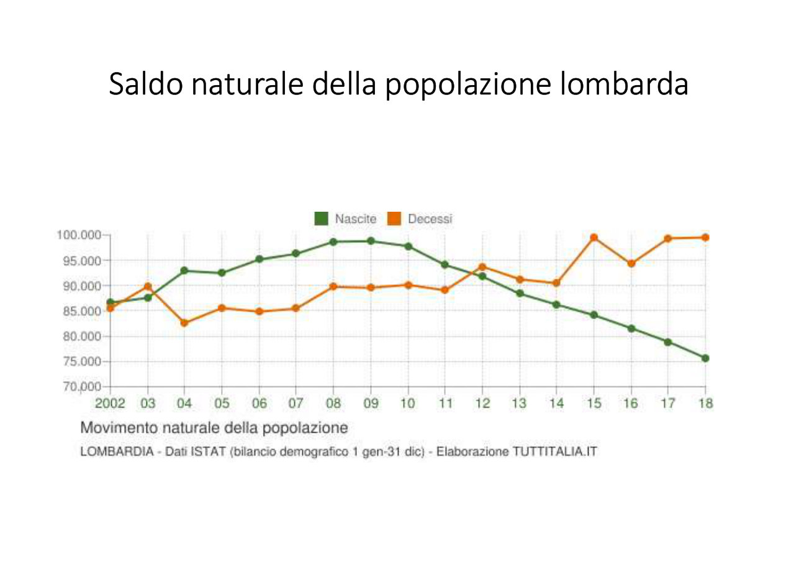
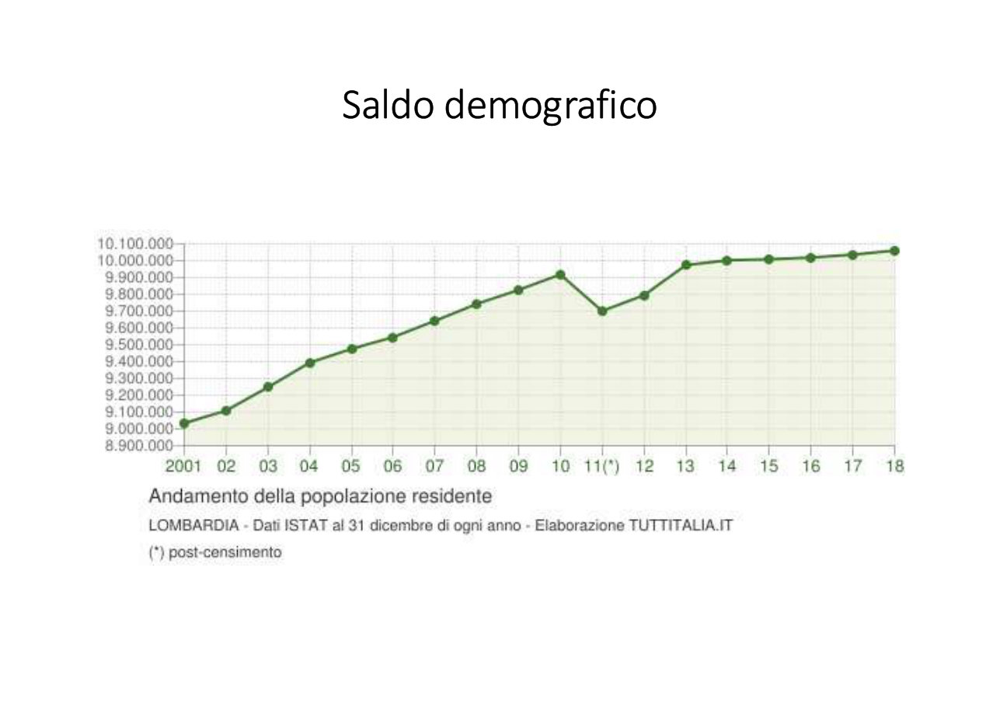
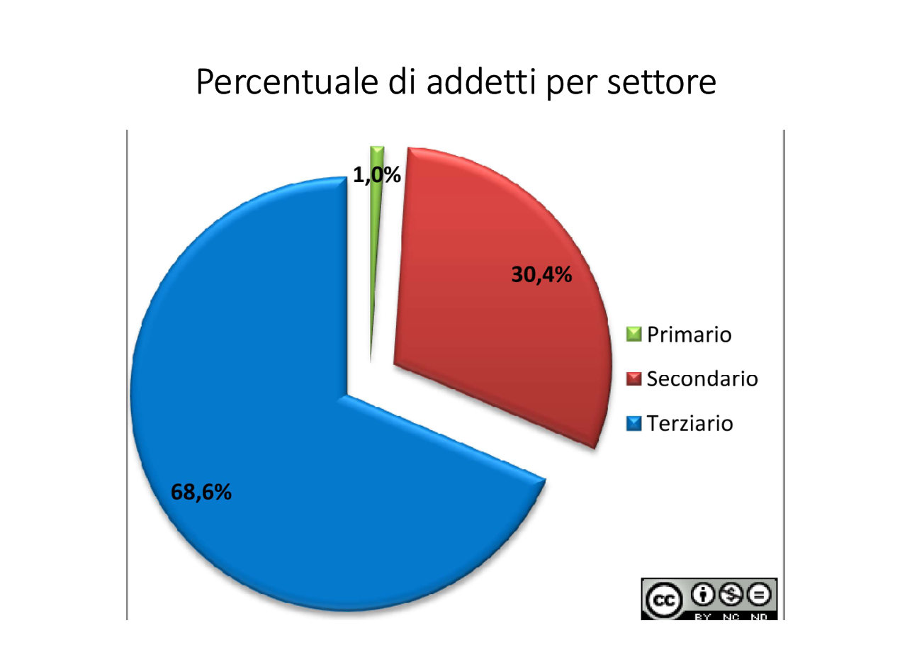
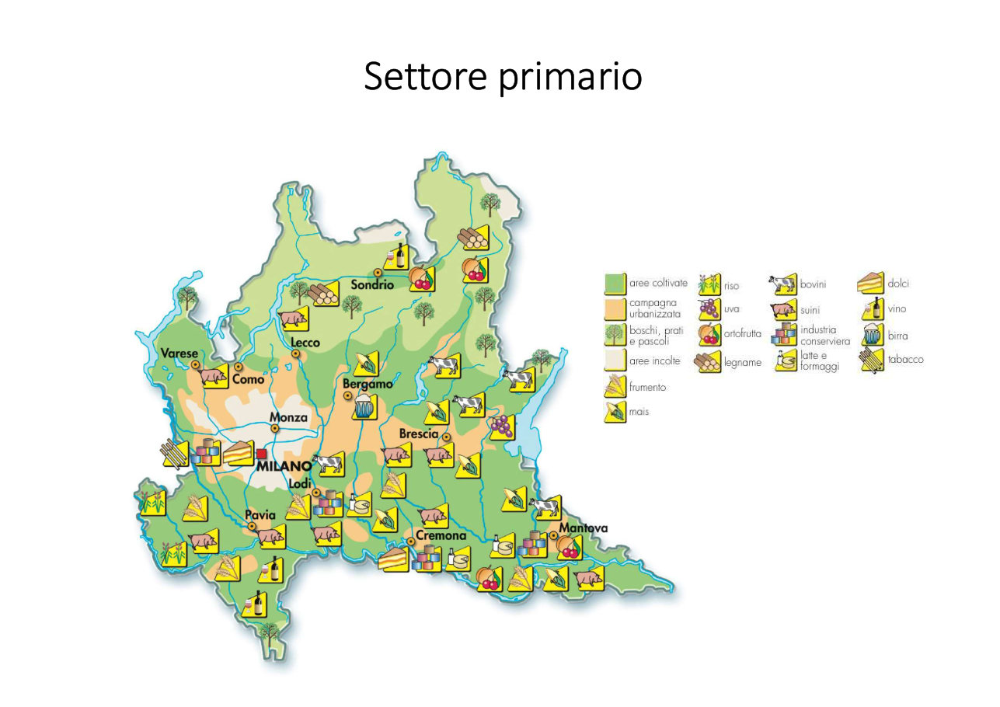
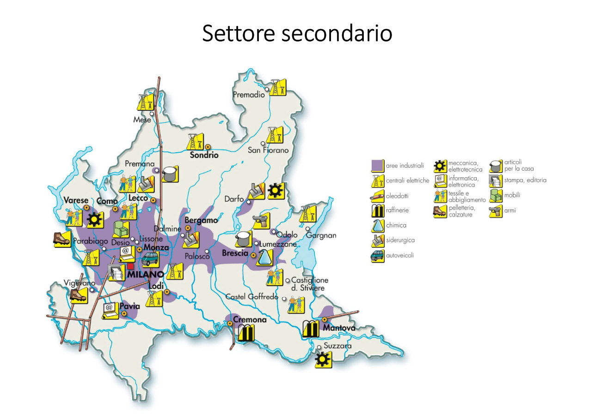
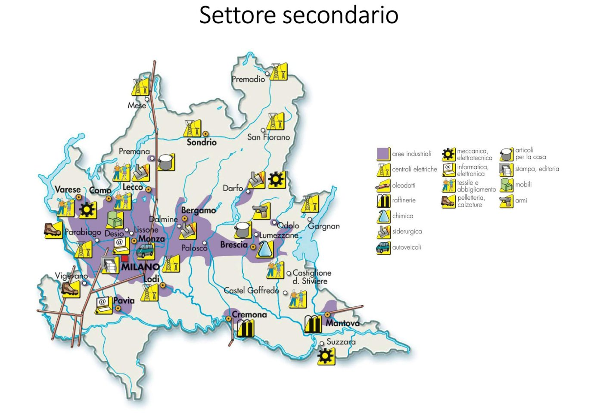
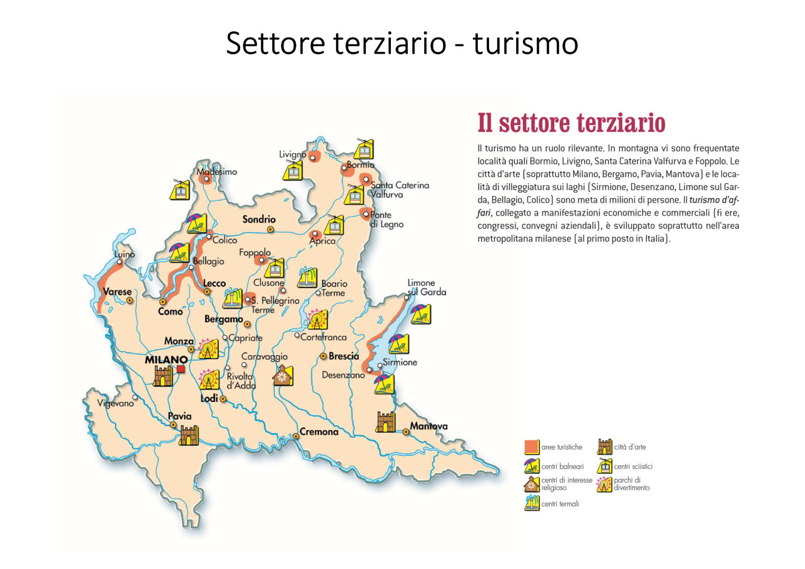

Quanti siamo, dove viviamo, che lavoro facciamo in Lombardia

Fino al 2011 nascevano più bambini di quante persone morivano. Dal 2012 le linee si incrociano: adesso muoiono più persone di quante ne nascano.

Eppure gli abitanti aumentano: da circa 9 milioni nel 2001 a più di 10 milioni nel 2018. Perché? Per l'immigrazione: arriva gente da altre regioni e da altri paesi.
È la prima regione d'Italia per economia e una delle zone più industriali d'Europa. Milano è una delle sei capitali economiche europee, insieme a Londra, Parigi, Francoforte, Amburgo e Monaco di Baviera.

| Settore | Lavoratori |
|---|---|
| 🌾 Primario agricoltura e allevamento | 1% |
| 🏭 Secondario industria | 30,4% |
| 🏦 Terziario servizi: negozi, banche, turismo, scuole | 68,6% |

Pochi lavorano nei campi, ma la Lombardia è la prima regione agricola d'Italia:
In pianura (Pavia, Lodi, Cremona, Mantova): riso, mais, frumento, mucche e maiali. In montagna: boschi, legname, frutta, 900 alpeggi dove pascolano mucche e pecore.

Le industrie stanno soprattutto in pianura, in una grande macchia che va da Varese e Como, passa per Milano e Monza e arriva a Bergamo e Brescia.

È il settore dove lavora più gente. A Milano c'è la Borsa Italiana. Ci sono 13 università e circa 1.300 centri di ricerca.

| Tipo di turismo | Dove |
|---|---|
| ⛷️ Montagna | Bormio, Livigno, Aprica, Santa Caterina Valfurva, Foppolo |
| 🏛️ Città d'arte | Milano, Bergamo, Pavia, Mantova |
| 🏖️ Laghi | Sirmione, Desenzano, Limone sul Garda, Bellagio, Colico |
| ♨️ Terme | San Pellegrino Terme, Boario Terme |
| 💼 Affari | Milano: fiere e congressi, prima in Italia |
POPOLAZIONE ED ECONOMIA
|
___________________|____________________
| | | |
ABITANTI PRIMARIO SECONDARIO TERZIARIO
10 milioni 1% lavora 30% lavora 69% lavora
16% italiani 1a regione 800.000 Borsa Milano
2/3 pianura agricola: imprese università
nascono pochi latte riso piccole TURISMO:
crescono per maiali vino Milano-BG-BS montagna, laghi,
immigrazione idroelettr. arte, affari
1. Quanti abitanti ha la Lombardia?
2. Perché gli abitanti crescono anche se nascono pochi bambini?
3. In quale settore lavora più gente?
4. Nomina tre prodotti dell'agricoltura lombarda.
5. Dove sono le industrie?